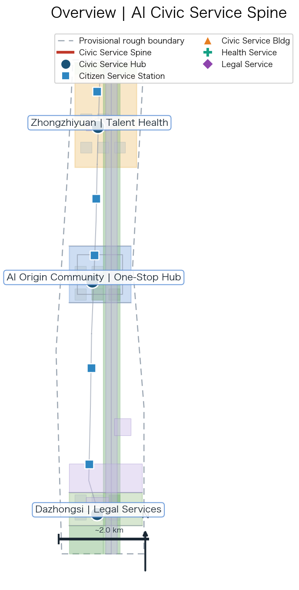
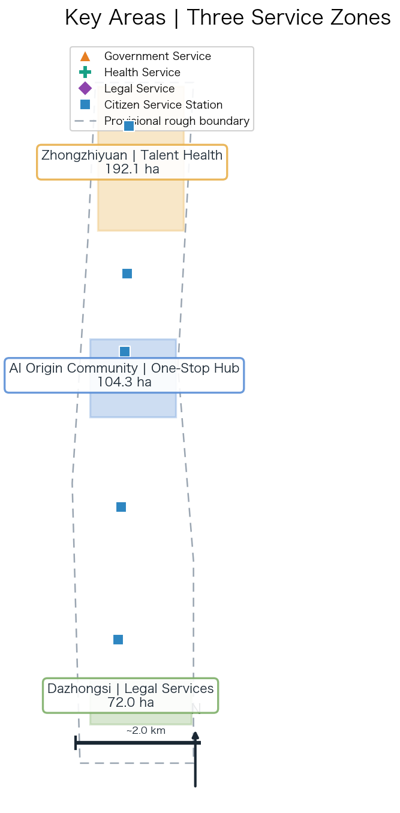
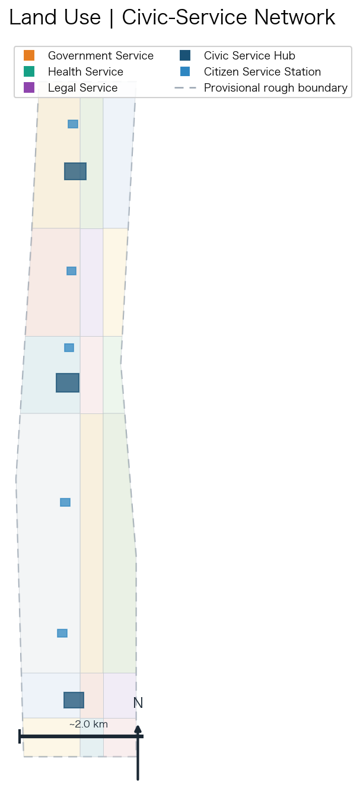
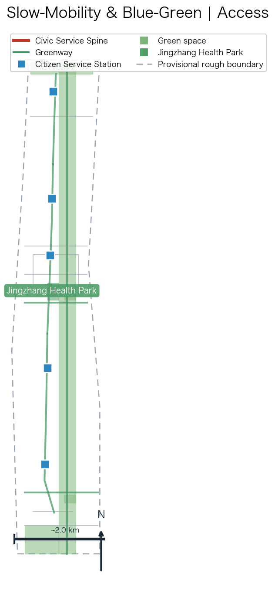
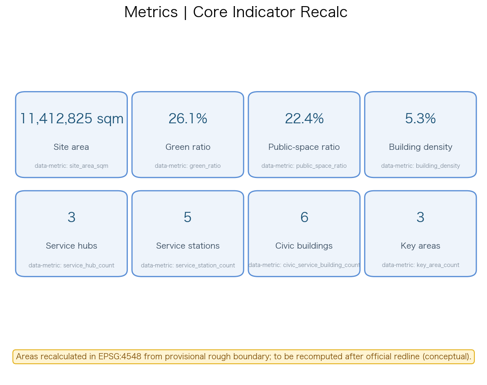

⚠️ Geometry uses a provisional rough boundary (not an official redline). All spatial/service outcomes are conceptual recommendations, not formal planning or approved decisions.
总览地图 Overview

重点区域 Key Areas

三层范围 Three-Level Scope
| Scope | Scale | Focus |
|---|
| 统筹研究范围 | 约43.6 km² | Resource layout study |
| 总体设计范围 | 约11.4 km² | One-axis / three-zone / multi-station structure |
| 重点区域范围 | 约368.4 ha | Detailed civic-service design of 3 key areas |
用地分区 Land-Use Zones
- 3 civic service hubs — AI Origin Community / Zhongzhiyuan health / Dazhongsi legal
- 5 citizen service stations — every 300–500m along the Jingzhang Heritage Park spine
- 6 civic service buildings — government / health / legal service carriers
- Civic Service Spine — Jingzhang Heritage Park slow-traffic axis (N/C/S segments)

交通慢行 Slow Mobility · 蓝绿公共空间 Blue-Green Public Space

建筑与更新项目 Buildings & Renewal Projects
- 6 civic service buildings — Demo hall / health navigation center / legal aid center / subdistrict service building / talent health center / justice living-room
- Renewal project package (conceptual) — retain heritage & communities; retrofit stock space into service carriers; new stations & health park
- Phasing — near-term one-stop hub + first stations; mid-term three-zone differentiation; long-term full network
AI 场景 Civic-Service Scenarios
| ID | Scenario | Human review |
|---|
| SC-01 | One-stop government navigation | Government review |
| SC-02 | AI health-service navigation | Medical review |
| SC-03 | Chronic-disease follow-up (test) | Medical + data-security |
| SC-04 | AI legal-consultation navigation | Legal review |
| SC-07 | One-tap emergency navigation (test) | Medical review |
| SC-10 | Station self-service terminal (test) | Manual review |
核心指标 Core Indicators

任务覆盖 Task Coverage (agent.1–6)
agent.1 Concept ✓agent.2 Eco cases ✓agent.3 Scenario cards ✓agent.4 Landmarks ✓agent.5 Culture ✓agent.6 Operation ✓
自检状态 Self-Check
Deterministic: PASSSpatial review: PASSVisual packaging: PASSProfessional evidence: PASS
来源 Sources
- Official announcement / agent taskbook / site package
- Provisional boundaries geojson
- Public digital-service cases (Estonia/Singapore/Hangzhou/Shanghai/Beijing)
- MOHURD urban-design measures / MNR land-use guide
假设 Assumptions
- A-CONTROLS-001: official redline/controls pending; land-use/intensity/demolition are conceptual
- A-DATA-002: only public/authorized/curated data; no personal health data collected
- A-SERVICE-003: subdistrict/health/legal-aid ownership and process pending authority confirmation